Search

Back
Chapter 1
Start learning
Continue where you left off
Meditation EN
English voice, 2x repeat
Meditation SK
Slovak voice, 2x repeat
Meditation EN + SK
English then Slovak
Marked only
No terms marked yet
Stop
Chapters
EN
SK
☆
1m
2m
5m
10m
5:00
25:00
Start
Reset
Time's up!
Great study session
Continue
×